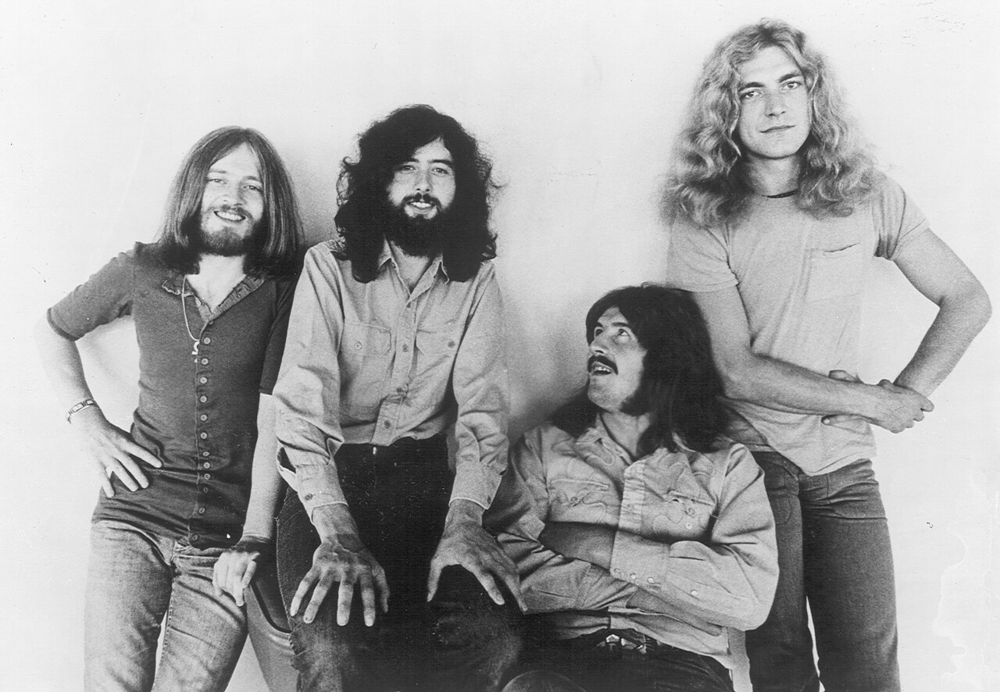
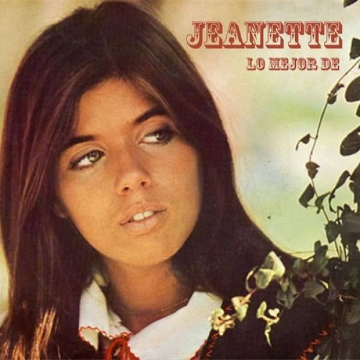

Britney
Pop
Britney Spears se convirtió en una de las artistas más populares de los años 90, destacándose por su estilo pop y su presencia mediática constante.
Playlist destacada
Bohemian Rhapsody — 1975
Somebody to Love — 1976
We Will Rock You — 1977
We Are the Champions — 1977
Don’t Stop Me Now — 1979

Bee Gees
Pop / Disco
Los Bee Gees dominaron la música disco en los años 70, con armonías únicas y un estilo inconfundible.
Playlist destacada
Stayin' Alive — 1977
How Deep Is Your Love — 1977
Night Fever — 1977

Led Zeppelin
Rock clásico británico
Led Zeppelin fue una de las bandas más influyentes de los años 70, mezclando rock, blues y elementos místicos en sus presentaciones.
Playlist destacada
Stairway to Heaven — 1971
Kashmir — 1975
Immigrant Song — 1970

Jeanette
Balada romántica
Jeanette destacó en los años 70 con un estilo suave, melódico y emocional que marcó a toda una generación.
Playlist destacada
Por qué te vas — 1974
El muchacho de los ojos tristes — 1978
Frente a frente — 1979